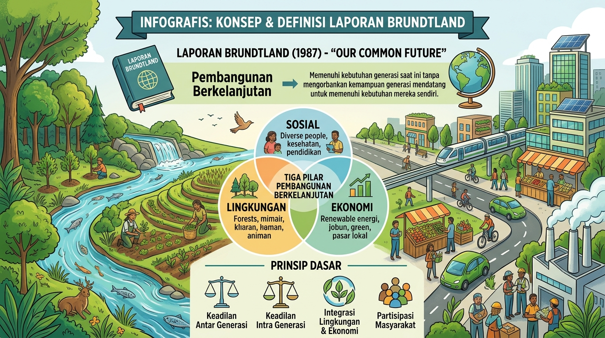
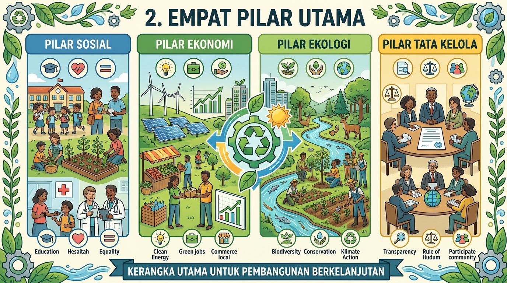
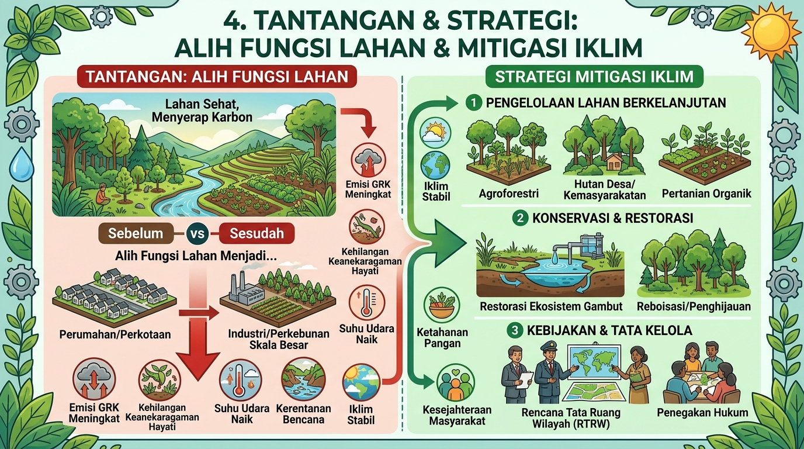

Chelsea Maizani Putri | NIM: 25045092
Implementasi Pembangunan Berkelanjutan
Eksplorasi mendalam tata ruang, keseimbangan ekologis, keadilan sosial, dan pertumbuhan ekonomi berkelanjutan berbasis perspektif spasial geografi.
Silakan isi nama dan asal sekolah / kelas terlebih dahulu.
Implementasi Pembangunan Berkelanjutan
Pilih topik materi di bawah untuk membaca penjelasan mendalam.
Konsep & Prinsip Utama
Brundtland & keadilan antar-generasi
Trinitas Pilar Pembangunan
Sosial, Ekonomi, Ekologi & Tata Kelola
Evaluasi & Kuis Interaktif
15 Soal (Pilihan, Kelompok, & Matching)
1. Konsep & Definisi
Laporan Brundtland & prinsip dasar.
2. Empat Pilar Utama
Sosial, Ekonomi, Ekologi, Tata Kelola.
3. Contoh di Indonesia
Energi surya, kota hijau, dan 3R.
4. Tantangan & Strategi
Alih fungsi lahan & mitigasi iklim.

Konsep Dasar & Definisi Esensial
Pembangunan berkelanjutan (sustainable development) pertama kali didefinisikan secara universal dalam laporan PBB Our Common Future (Laporan Brundtland, 1987) sebagai:
"Pembangunan yang memenuhi kebutuhan masa kini tanpa mengorbankan kemampuan generasi mendatang untuk memenuhi kebutuhan mereka sendiri."
Keadilan Intergenerasi
Memastikan eksploitasi sumber daya alam saat ini tidak meninggalkan kerusakan atau krisis bagi anak cucu di masa depan.
Perspektif Spasial Geografi
Pendekatan keruangan untuk menganalisis lokasi, interaksi wilayah, dan kesesuaian lahan guna mencegah degradasi lingkungan.

Empat Pilar Utama Pembangunan Berkelanjutan
Kerangka modern pembangunan berkelanjutan didukung oleh empat pilar yang saling bersinergi dan tidak dapat dipisahkan:
1. Pilar Sosial
Fokus pada pengentasan kemiskinan, pemerataan pendidikan, layanan kesehatan berkualitas, dan inklusivitas masyarakat.
2. Pilar Ekonomi
Pertumbuhan ekonomi inklusif, penciptaan lapangan kerja hijau, efisiensi sumber daya, dan stabilitas finansial jangka panjang.
3. Pilar Ekologi (Lingkungan)
Konservasi keanekaragaman hayati, perlindungan daerah aliran sungai (DAS), penurunan emisi karbon, dan daya dukung alam.
4. Pilar Tata Kelola (Governance)
Penegakan hukum lingkungan, transparansi kebijakan tata ruang, partisipasi publik, dan antikorupsi.

Contoh Penerapan Nyata di Indonesia
Implementasi pembangunan berkelanjutan di berbagai wilayah di Indonesia diwujudkan melalui program strategis nasional maupun lokal:
Energi Terbarukan
Pemanfaatan Pembangkit Listrik Tenaga Surya (PLTS) atap, panas bumi (geothermal) di Dieng dan Kamojang, serta biofuel.
Ekonomi Sirkular & 3R
Pengembangan bank sampah komunitas, pengelolaan sampah terpadu, dan pembatasan penggunaan plastik sekali pakai.
Kota Hijau & RTH
Pembangunan Ruang Terbuka Hijau (RTH) perkotaan minimal 30%, transportasi masal rendah emisi, dan rehabilitasi mangrove.

Tantangan & Strategi Mitigasi
Dalam praktiknya, implementasi pembangunan berkelanjutan menghadapi berbagai tantangan kompleks yang memerlukan strategi geospasial yang tepat:
Tantangan Utama
- Alih fungsi lahan pertanian subur menjadi kawasan industri/perumahan.
- Eksploitasi tambang ilegal yang merusak DAS dan ekosistem lokal.
- Kurangnya kesadaran masyarakat terhadap pengelolaan sampah harian.
- Dampak perubahan iklim global terhadap kenaikan air laut.
Strategi & Solusi
- Penegakan hukum Rencana Tata Ruang Wilayah (RTRW) secara ketat.
- Penerapan Analisis Mengenai Dampak Lingkungan (AMDAL) yang transparan.
- Edukasi lingkungan sejak dini melalui kurikulum geografi berbasis proyek.
- Transisi energi menuju net zero emission (NZE) tahun 2060.
Kuis Geografi (15 Soal Lengkap)
Sertifikat Penyelesaian
Selamat, Anda telah menyelesaikan seluruh kategori kuis.
Diberikan kepada
-
-
Nilai Akhir
0 / 100